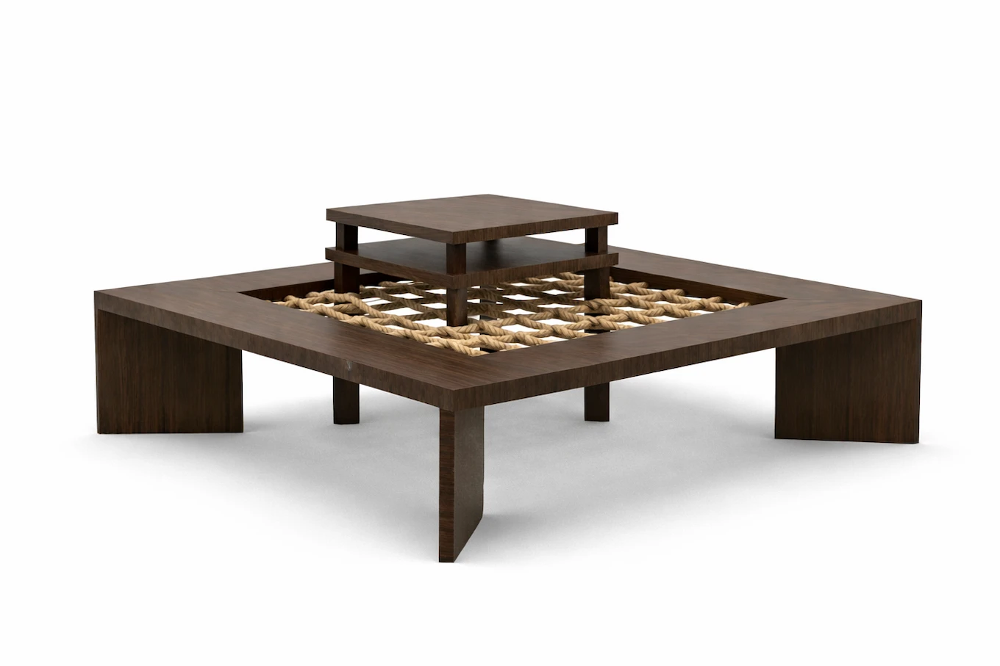
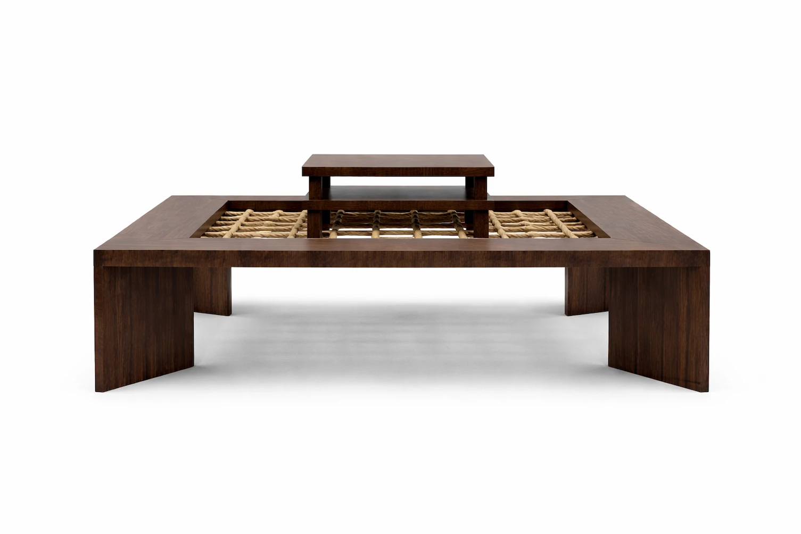
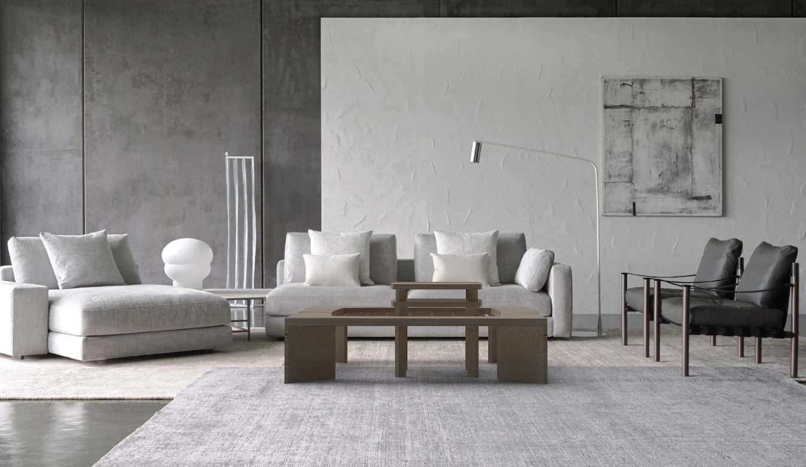
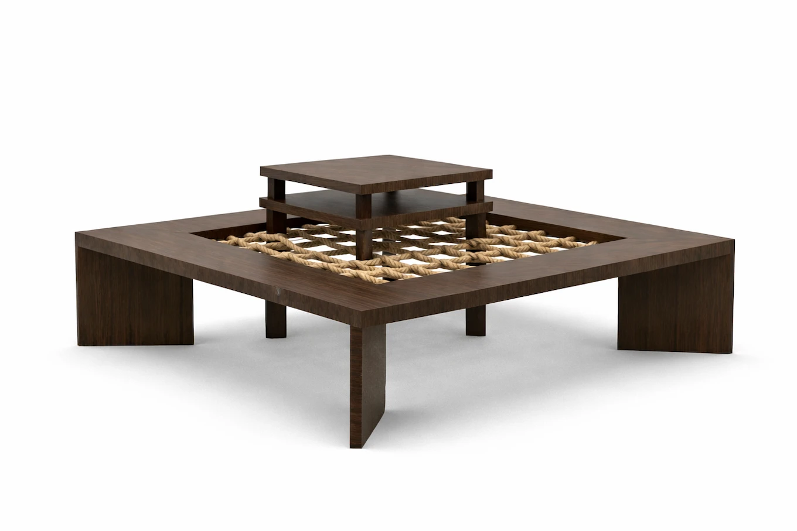
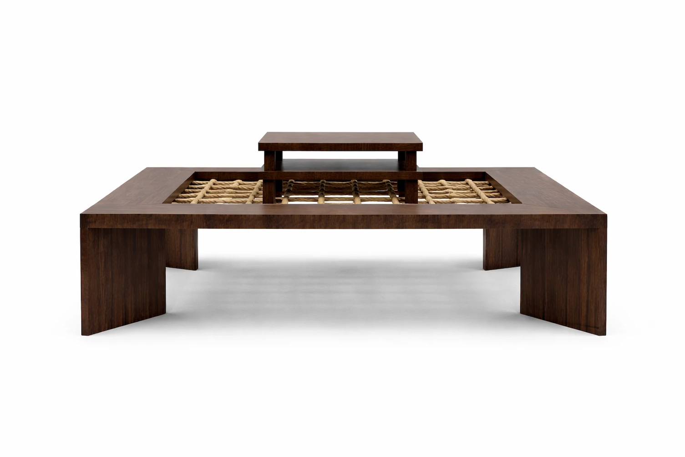
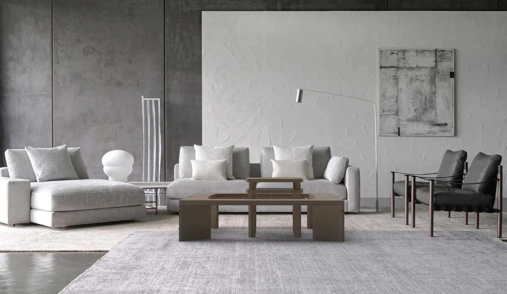
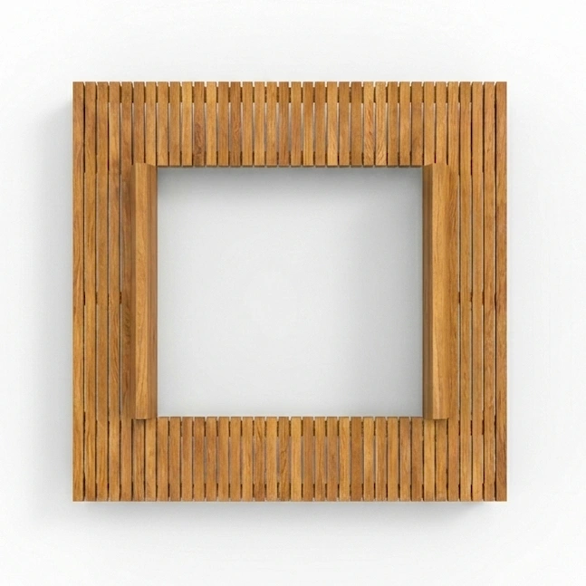
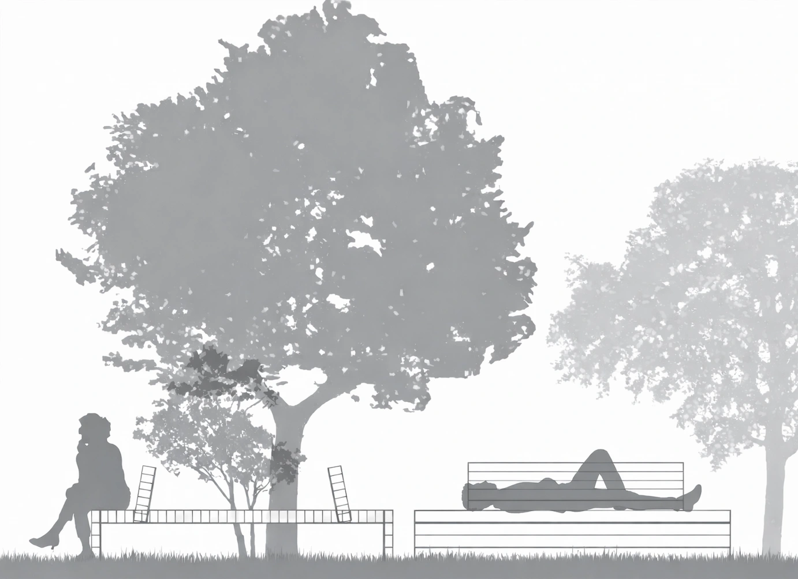
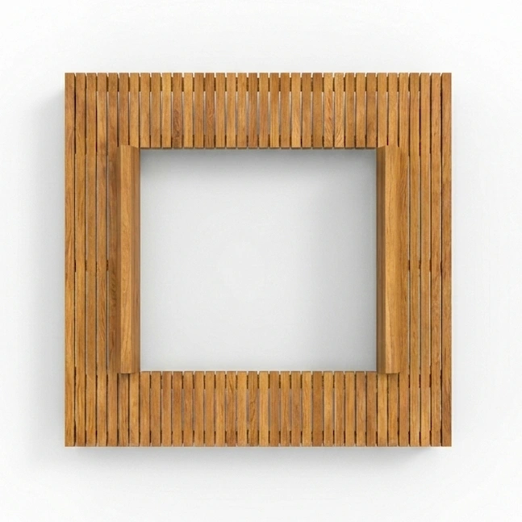
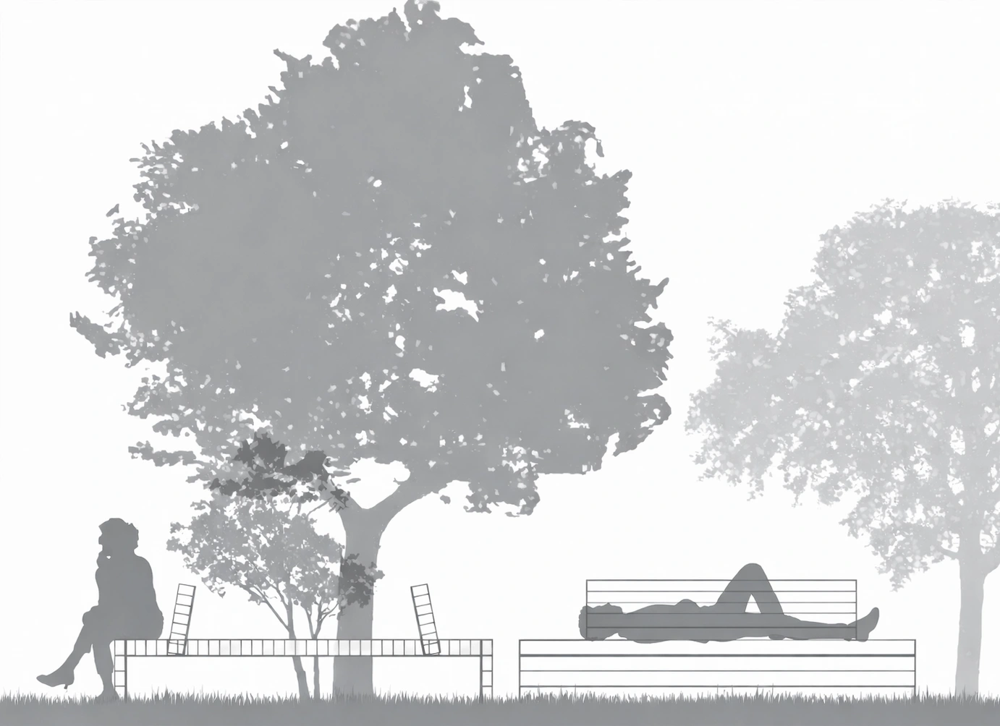

This project reinterprets the traditional chicken coop through contemporary volumetry and materials. Its envelope, composed of plywood panels and glass, is supported by a solid timber frame. The interior layout follows a strict functional logic designed to optimize animal movement: nesting boxes accessible from the exterior, perches suspended on an independent structure, passive ventilation, and a hinged entry ramp that folds up to seal the coop. The insertion of glass panels maximizes natural light intake, reducing reliance on artificial lighting. The result is a piece of domestic micro-architecture where utility meets a sleek aesthetic, designed to blend seamlessly into a modern garden.

This hybrid outdoor furniture module challenges standard campus design by offering a fully mobile and adaptable solution. Mounted on lockable casters, the unit is built around a timber frame. It integrates a multifunctional program: seating, a work surface, a sunshade, a green wall, and planters. The design encourages intuitive appropriation, encouraging students to engage in both outdoor study and spatial experimentation. Designed to function individually or in clusters, the modules can be arranged into islands that promote cohabitation and social exchange.
 





This modular coffee table explores the relationship between structure and volume. The primary piece, crafted from solid wood, features a central void spanned by a woven rope mesh, creating a flexible receiving surface. A smaller secondary side table is designed to nest directly into the mesh grid. This object proposes an evolutionary reading of furniture design, where each element can function independently or in interaction with the other.
 



Around a tree ⎯Winning Entry, Forêt-Genève. This project highlights the value of locally sourced materials by integrating solid oak harvested directly from Geneva’s forests. A galvanized steel framework ensures structural stability while creating a sharp contrast with the natural warmth of the wood. The design invites versatile usage allowing users to sit along the perimeter or lounge across the surface maximizing potential postures and social interactions.
This urban furniture project introduces a modular approach to public space design. Composed of reinforced concrete slabs supported by a powder-coated tubular steel structure, the system offers infinite configurations, allowing it to adapt to the specific flows and varying uses of its environment. The arrangement creates a rhythmic balance between solid and void, generating versatile surfaces for rest, social gathering, or playful appropriation.